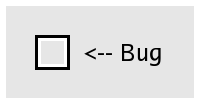
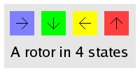

Welcome to this page. We'd like to show off a mathematical model (the Rotor Router Model) using a java applet.

The model involves a bug (represented by an empty black and
while square) moving along a graph (represented by boxes
linked by arrows).

Each box on the graph contains a rotor that can be in different
states. These states are represented by colors and arrows.
When a bug visits a box, that box's state will change.
To get started, jump to the Applet and click the step button repeatedly and watch how the bug moves around the graph.
If you are confused, try our walkthrough.
If your browser window is too small, try this.
small |
medium |
large.
No Double Buffer:
small |
medium |
large.
The Rotor Router Model is composed of a directed graph (infinite or finite) with a rotor attached to each vertex. The rotor at a given vertex is a pointer to one of the edges that leaves that vertex. In the model, a bug traverses the graph along the edges, following the direction of the rotor at each vertex.
The twist is that each time a bug visits a vertex, she rotates the rotor so that it points to the next edge, before following the rotor.
This is a deterministic system.
This model has two variations: the walk mode and the aggregation mode.
In the walk mode, the bug will traverse the graph until she encounters a sink. A sink is a vertex with no edges leaving it, If there is a sink in the system, it has no rotor on it. If a bug visits a sink, she disappears from the system. After that happens, we put a new bug on some specified vertex, called the source.
In the aggregation mode, all vertices start out empty; once a bug hits an empty vertex, the vertex is filled and it gets a normal rotor on it. Then the bug returns to the source. For this mode to be interesting, we need a graph with an infinite number of empty vertices.
To switch between graphs, choose one from the drop-down menu and hit “Reset”.
Pressing the Step button increments the system by one step. The bug alternates between moving to the next vertex and moving a rotor each step.
The Stage button increments the system until a bug hits a sink (or, in the case of aggregation, a new site becomes occupied). A stage is made of many steps.
The Reset button resets the system to the initial state and zeros out any counters.
The Pause/Unpause button controls the automated iterations. If the applet is unpaused, the system will increment by steps or stages, according to the Skip Each variable.
There is a display bug with Apple JVM 1.4, used by current versions of the Safari Browser. If you experince this issue, use the non-double buffered version of this applet:
Normal:
small |
medium |
large.
No Double Buffer:
small |
medium |
large.
There are built-in limits to how big the 2-D systems can become. When they hit that limit, they will stop, even if the stage is not done. For more information, read the code.
The applet as designed with Java 1.1 in mind, so all browsers back to 1998 should be supported. But we cannot make any guarantees. You may want to maximize your browser window if you want to see the whole applet.
This work is Copyright (C) 2003-2004 by Hal Canary and the University of Wisconsin-Madison.
Hal wrote most of the code while working for Professor Jim Propp, who is studying the Rotor Router System. Francis Wong has assisted.
This work was supported by the University of Wisconsin.
This work comes with ABSOLUTELY NO WARRANTY. This program is free software; you can redistribute it and/or modify it under the terms of version 2 of the GNU General Public License as published by the Free Software Foundation.
Source: tarball and zipfile. Programmer's documentation. Readme file.
Give us feedback! Send mail to Hal Canary «hal at ups dot physics dot wisc dot edu» and Jim Propp «propp at math dot wisc dot edu».
{kind=link}
{kind=link}
{kind=link}
{kind=link}
{kind=link}